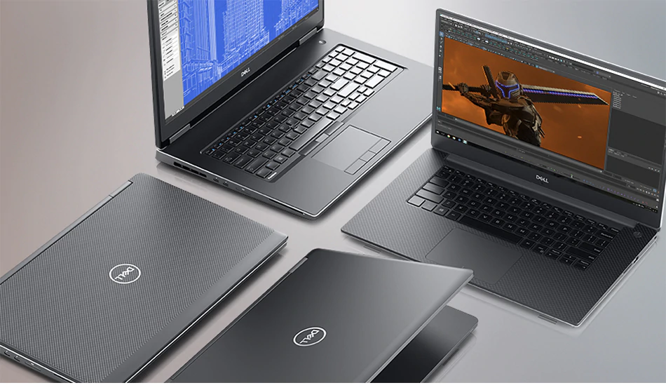
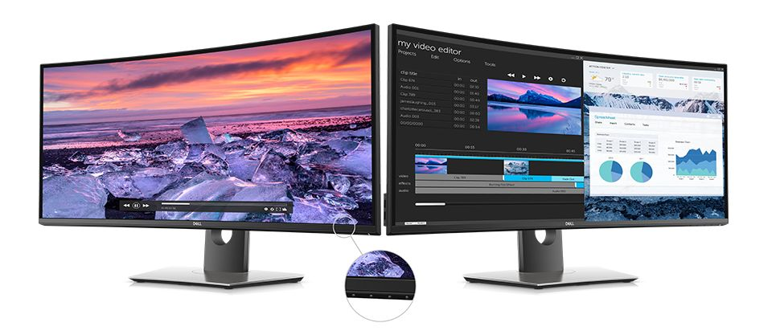
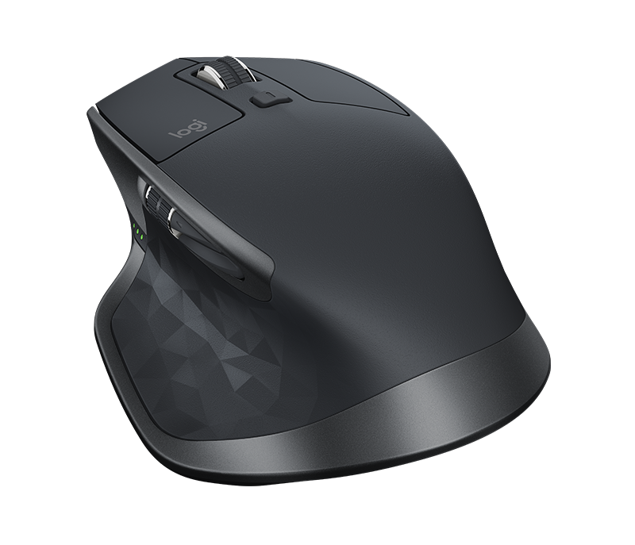
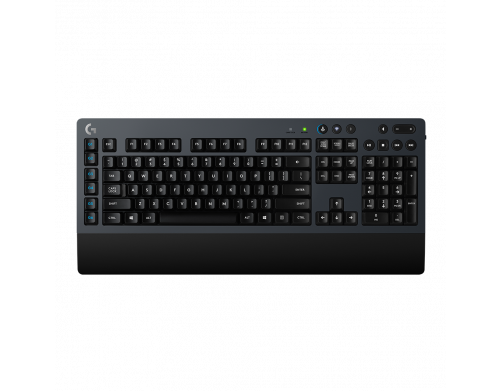

| Imagem | Descrição | Quantidade | Preço |
|---|---|---|---|
|  | Obtenha inovação irrestrita com as workstations móveis Dell Precision, que foram criadas com materiais de alta qualidade e são mais finas e leves. Desenvolvida com os mais recentes processadores Intel® Core™ e Xeon® de 6 núcleos, memória incrivelmente rápida e placas gráficas profissionais, a família de workstations móveis Dell Precision foi criada com uma capacidade tão grande quanto sua imaginação. | 20 | R$15000.00 |
|  | Imagens imersivas: a maior curvatura da tela melhora seu campo de visão, reduz reflexos e cria um foco visual praticamente uniforme. Isso reduz o movimento dos olhos pela tela para que você possa trabalhar de maneira confortável por mais tempo. | 25 | R$4000.00 |
|  | O principal mouse da Logitech foi projetado para usuários avançados e especialistas que desejam fazer mais de forma mais eficiente. O MX Master 2S tem um efeito poderoso com o Logitech Flow que permite controlar sem problemas dois computadores com um mouse e copiar/colar conteúdo entre eles. Combinado com outras características avançadas e um projeto impressionante, para um excepcional conforto, controle, precisão e personalização. | 40 | R$400.00 |
|  | O G613 é um teclado sem fio de última geração concebido para jogadores que exigem o alto desempenho de teclas mecânicas e a liberdade de um dispositivo sem fio para jogos. | 26 | R$500.00 |
Telefone: (XX)XXXXX-XXXX
Email: contato@lojanewton.com
Boleto
Cartão de credito